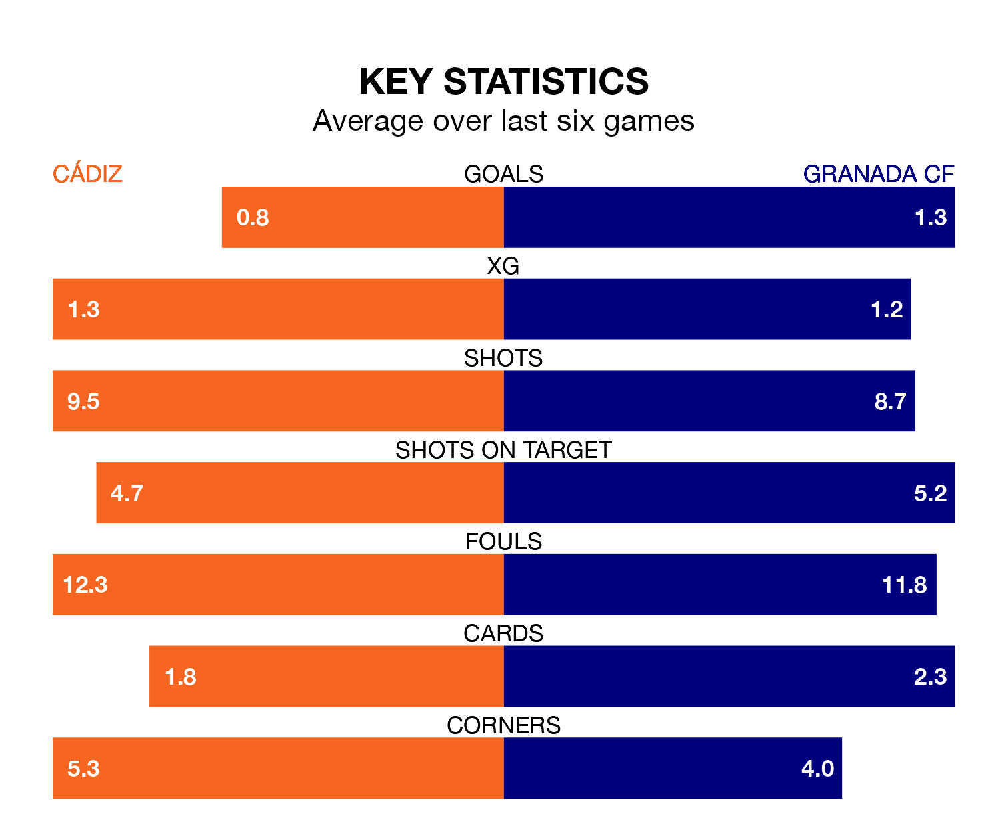

Friday's late match at the Estadio Nuevo Mirandilla sees two relegation candidates play each other, as 18th-ranked Cádiz host 19th-placed Granada CF.
Cádiz have picked up 22 points from their first 22 La Liga games, with three wins and 13 draws.
That is eight points more than Granada have collected, having won two and drawn eight.
Cádiz are in disappointing form in La Liga, with one win and two draws from their last six games.
With no wins and three draws over that period, Granada's form is slightly worse – they have taken three points from 18, compared to the home side's five.
In the last 10 years, Cádiz and Granada have played each other on nine occasions. They won two each, and they drew five times.
On average, Cádiz scored 0.7 goals and Granada 0.8 in those matches.
Their last meeting was on January 3, when Granada won 2-0 at home.
With 20 goals in 29 games so far this season, Cádiz are the league's lowest scorers with 0.7 goals per game. And they are conceding more than average, letting in 40 goals at a rate of 1.4 per game.
The visitors are also below average scorers, with 1.1 goals per game, compared to a league average of 1.3. They have conceded 2.1 goals per game.
Cádiz's last match was on March 15, a 2-0 loss against Real Sociedad.
Granada lost 1-0 against RCD Mallorca last time out, on March 16.
Updated: 12:16 (UTC), 25/03/24